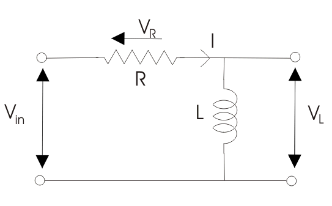
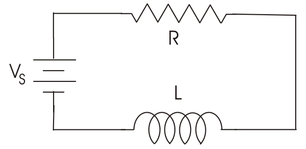

Transfer Function of Series RL Circuit
Time Constant in RL Circuit
RL Circuit as Filter
Low Pass RL Filter
High Pass RL Filter
The resistor and inductor are the most fundamental linear (element having linear relationship between voltage and electric current ) and passive (which consume energy) elements. When resistor and inductor are connected across voltage supply, the circuit so obtained is called RL circuit.
RL Series Circuit
Types of RL Circuit
- RL series circuit - When resistance and inductor are connected in series with voltage supply. The circuit is called series RL circuit.
- RL parallel circuit - When resistance and inductor are connected in parallel with each other and is driven by voltage source , the circuit so obtained is called parallel RL circuit.

RL Parallel Circuit
Transfer Function of Series RL Circuit
A Transfer function is used to analysis RL circuit. It is defined as the ratio of the output of a system to the input of a system, in the Laplace domain.

Consider a RL circuit in which resistor and inductor are connected in series with each other.
Let Vin be the input supply voltage,
VL is the voltage across inductor, L,
VR is the voltage across resistor,
& I is the electric current flowing through the circuit.
Now for finding transfer function apply voltage or potential divider rule. The voltage divider rule is a simplest rule used for determine the output voltage across any element in circuit. It states that the voltage divided between the resistors is in direct proportion to their respective resistance.
Using voltage divider rule, the voltage across inductor VL is:
The voltage across the resistor VR is:
The transfer function, HL for the inductor is:
Similarly, the transfer function, HR for the resistor is,
Current: Since the circuit is in series so the electric current in resistor and inductor are the same and is given by:
Time Constant in RL Circuit

The time constant of an RL circuit is defined as the time taken by the electric current to reach its maximum value that had maintained during its initial rate of rise.
The time constant of a series RL circuit equal to the ratio of value of inductor to the value of resistance:

Where T = time constant in seconds,
L = inductor in Henry,
& R = resistance in ohms.
Time Constant in RL Circuit
In RL circuit due to presence of inductor the electric current in the circuit does not build up at a steady rate because inductor has a property to oppose the change in electric current flowing through it. So rate of increase in electric current is initially rapid but it slows down as it approaches its maximum value. During each time constant, the electric current build up 63.2% of its remaining distance. As shown in graph it takes 5 times constant to build up a electric current in RL circuit.
RL Circuit as Filter
Low Pass RL Filter
Consider a RL circuit is supplying with a voltage source of varying frequency and the circuit output voltage is taken across resistor R1. The resistor, R1 is independent of frequency but the inductive reactance is directly proportional to frequency (as XL = 2πfL). At low or zero (as in case of DC) frequency, the inductive reactance XL is very small as compared to resistance because when frequency is low, inductive reactance is also low so, it act as a short circuit. As there is no voltage drop across inductor the output voltage is almost same as that of input voltage both in magnitude and the phase and it acts as low pass filter. Now when frequency is increases, inductive reactance, XL also increases and this causes increase in magnitude of voltage drop across inductor and hence reduce the output voltage across resistor. This increase in inductive reactance creates a phase shift between input and output voltage.
RL Circuit as Filter
High Pass RL Filter
Consider a RL circuit is supplying with a voltage source of varying frequency and the circuit output voltage is taken across inductor, L1. At very low or zero frequency, inductive impedance is zero so, inductor acts as short circuit and the output voltage across it is zero. As the frequency increases, inductive reactance also increases causing more voltage to drop across it and it act as high pass filter.
 by
by {kind=link}